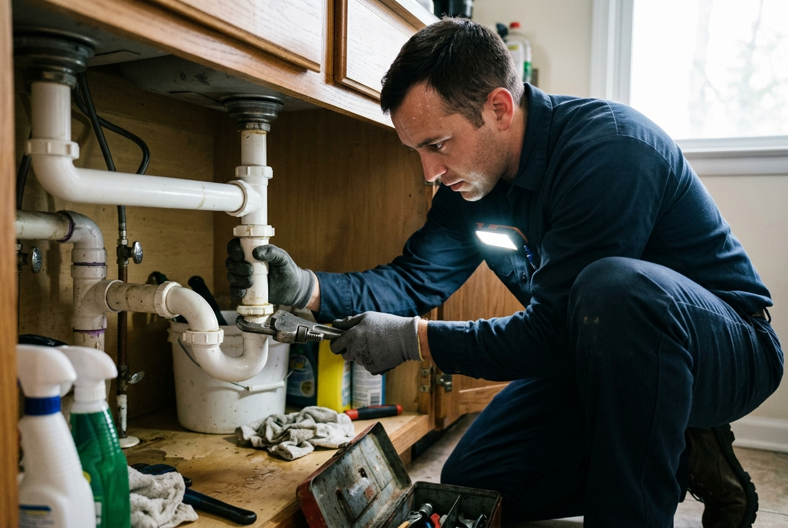

URGENT

Emergency Drain Cleaning
Rapid response for sudden sewage overflows, multiple fixtures backing up, or severe main drain stoppages that threaten your home with water damage.
Learn About Emergency Service →